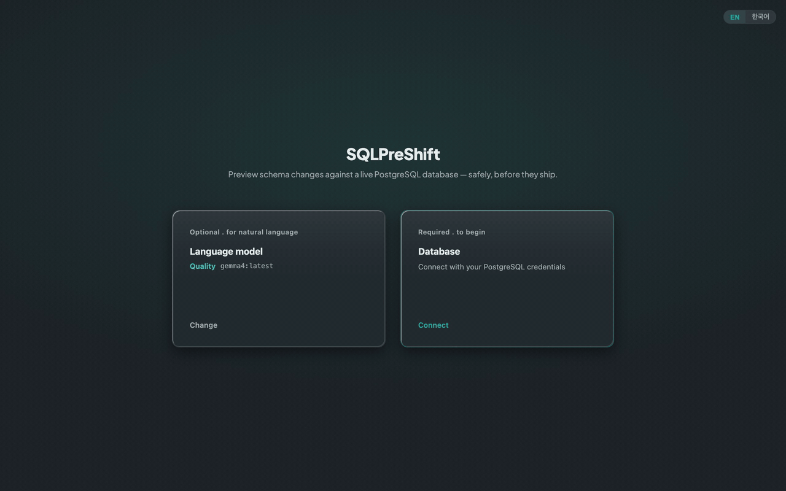
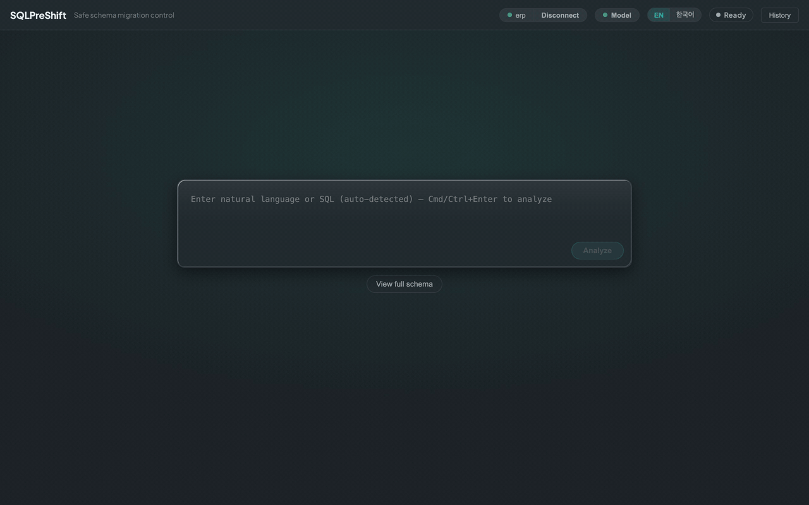
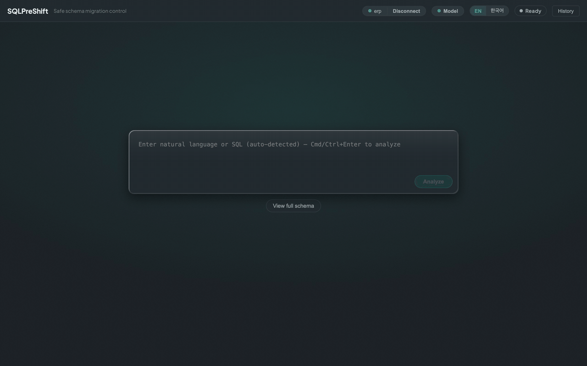
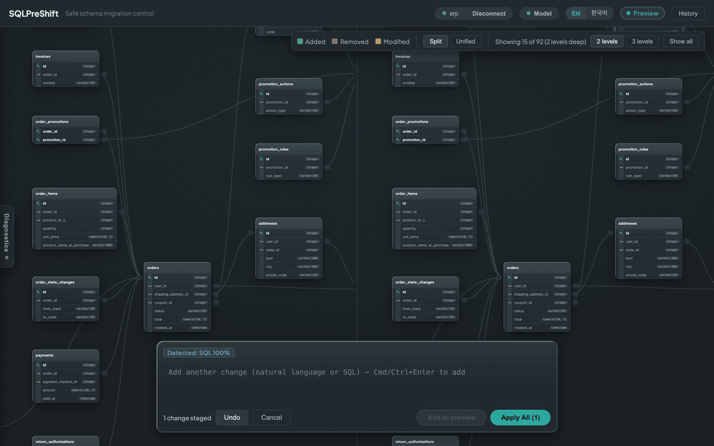

이 앱을 어떻게 생각하면 되나
SQLPreShift의 모든 작업은 네 단계로 흐릅니다. 이 흐름은 앱 상단 상태 표시와 그대로 대응합니다.
Ready → Analyzing → Preview → Applying → AppliedmacOS Apple Silicon · ~122 MiB · macOS Big Sur 11+ · PostgreSQL 16 target · 완전히 로컬에서 동작.
필요한 것은 앱 본체와 로컬 PostgreSQL 16, 또는 함께 제공하는 데모 DB(ERP·Pagila, 로컬에서 별도로 띄우는 PostgreSQL)뿐입니다. 자연어 입력을 쓰려면 Ollama와 모델이 있으면 되지만, 없어도 SQL 직접 입력으로 바로 시작할 수 있습니다.
설치하고 처음 열기
Download for macOS 페이지에서 앱을 받은 뒤, Finder에서 SQLPreShift.app을 우클릭 → Open으로 실행합니다.
코드서명이 없는 빌드라 the developer cannot be verified 경고가 뜨는데, 이는 정상이며 다시 Open을 누르면 됩니다. 앱이 열리면 DB 연결 화면이 먼저 나타납니다.
데이터베이스에 연결하기

Host / Port / Database / User / Password를 입력하고 Test Connection으로 연결을 확인한 뒤 Connect를 누르면 됩니다(Test는 선택). 연결되면 왼쪽에 빈 캔버스와 입력창이 뜨고, View full schema를 누르면 전체 스키마 ERD가 그려집니다. 데모 ERP DB라면 92개 테이블이 나타납니다.
붙을 DB가 없어도, 함께 제공하는 데모 DB(ERP / Pagila)를 로컬에 띄우면 바로 시작할 수 있습니다.
연결 설정·데모 DB·문제 해결 자세히첫 변경 미리보기

하단 입력창에 SQL이나 자연어를 쓰고 Cmd/Ctrl+Enter로 분석합니다. 변경이 적용되기 전에 ERD에 Added(초록) / Removed(빨강) / Modified(주황)로 그려집니다. 이 단계는 읽기 전용이라 DB는 아직 바뀌지 않습니다.
위험 진단 읽기

위험 판정은 100% 결정적인 규칙 기반이라 같은 입력엔 항상 같은 결과가 나옵니다(LLM은 해설만 덧붙입니다). Critical(빨강)은 파괴적 변경으로 적용 전 명시 확인을 강제하고, Warning(주황)은 알리되 차단하지 않습니다. 각 위험은 더 안전한 대안(golden-path)을 함께 제시합니다.
변경 적용하고 되돌리기

미리보기에 만족하면 Apply All로 적용합니다. 적용은 단일 트랜잭션이라 하나라도 실패하면 전부 롤백됩니다(all-or-nothing). 적용 직후엔 Rollback으로 방금 변경을 통째로 되돌릴 수 있습니다.
핵심 워크플로 한눈에
입력 → 미리보기(read-only) → 위험 진단 → 단일 트랜잭션 Apply / 전체 Rollback.